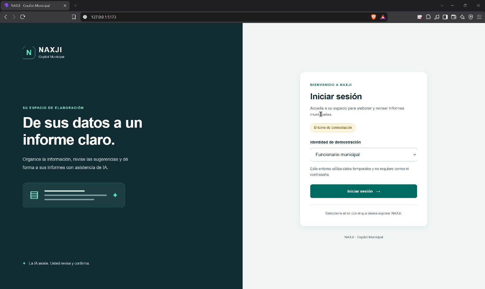
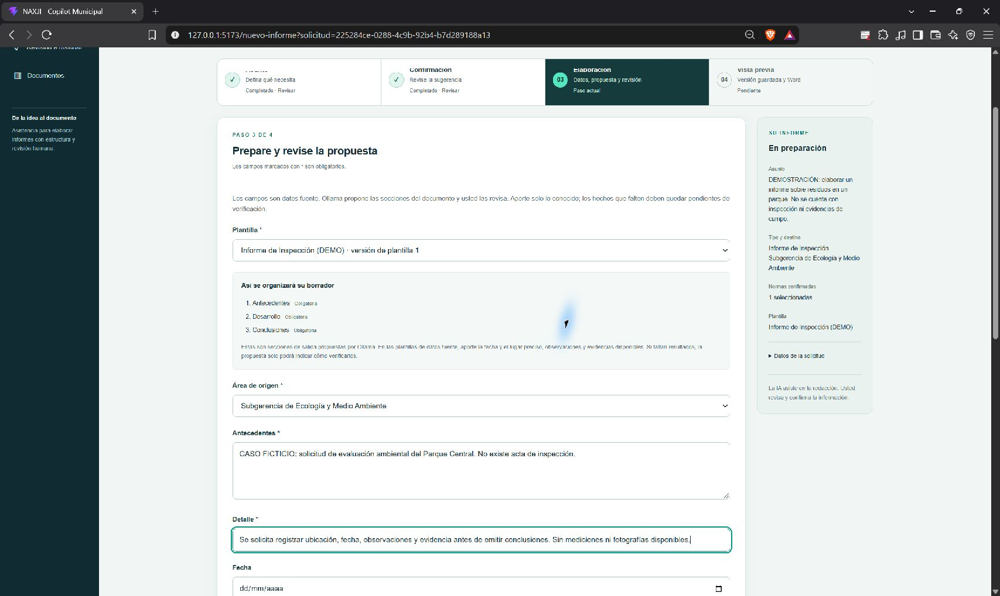
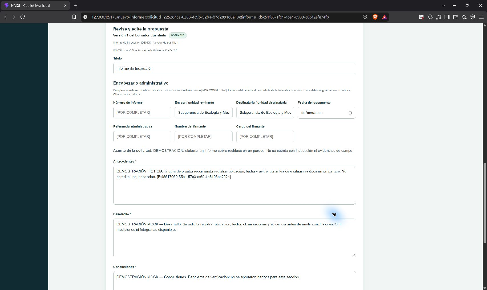
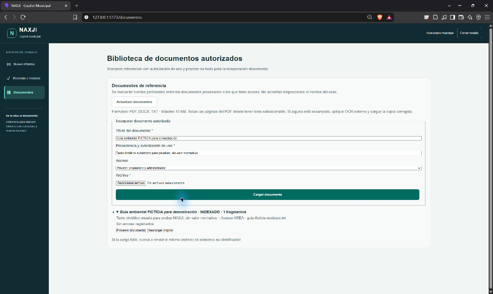
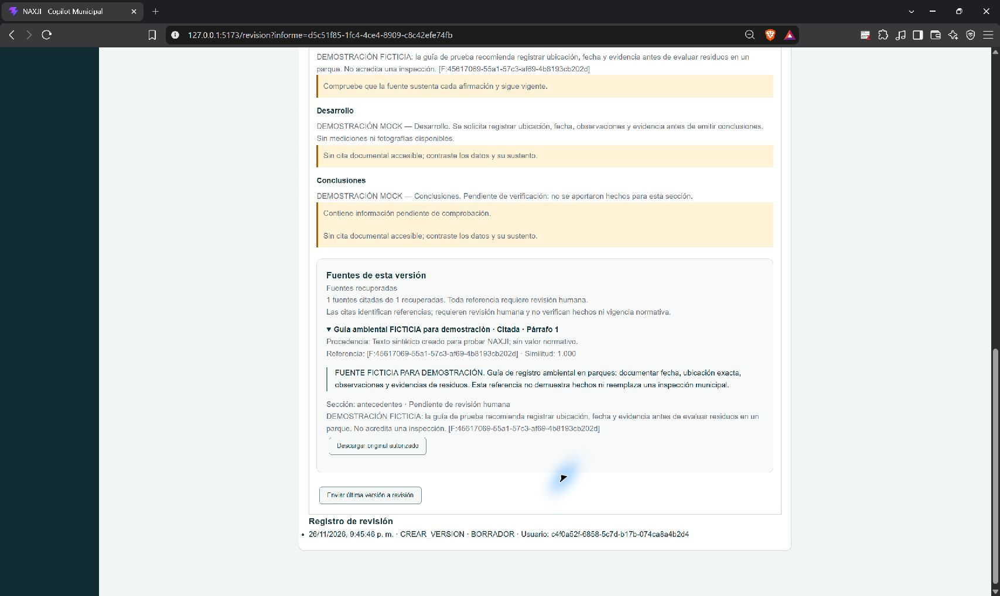
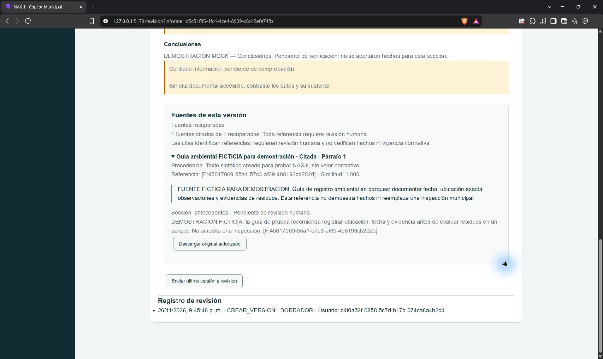
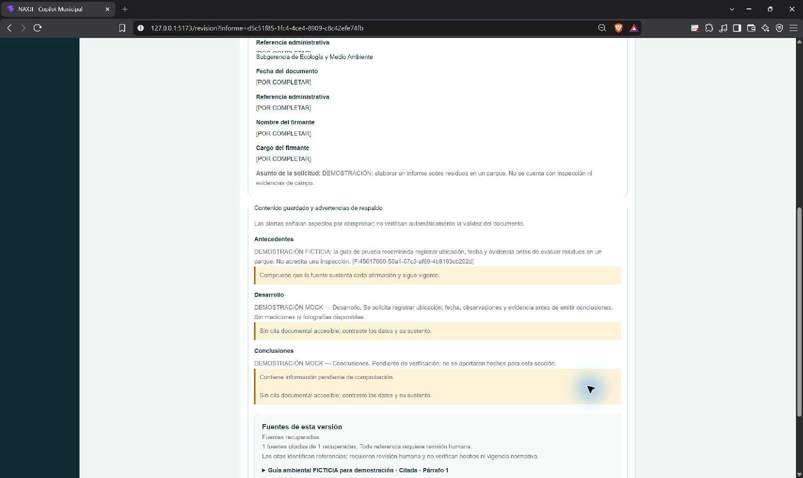
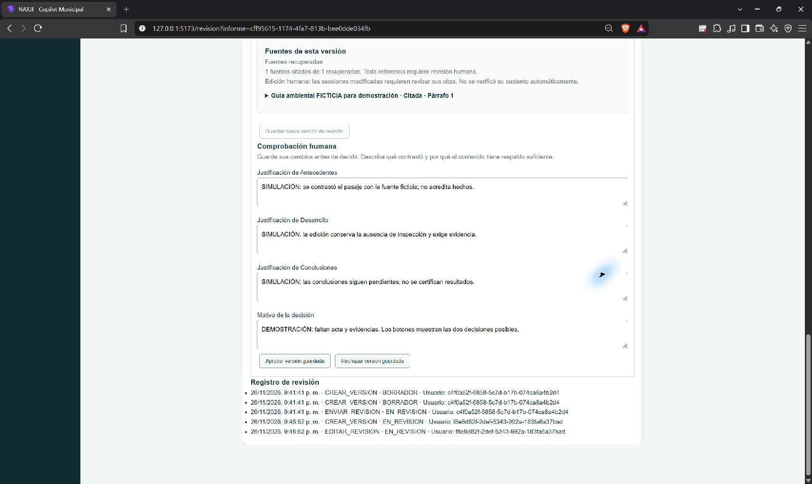
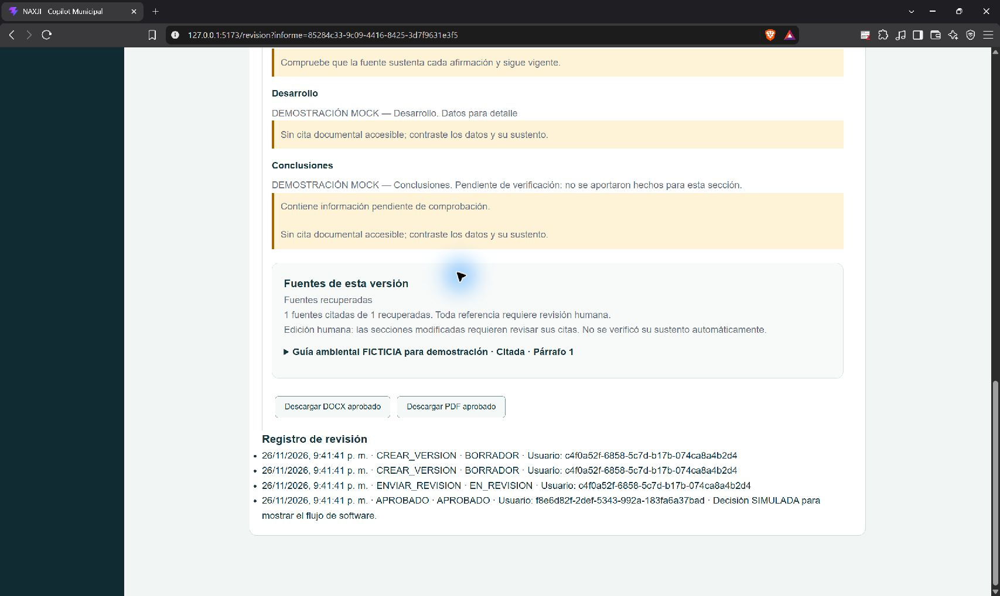
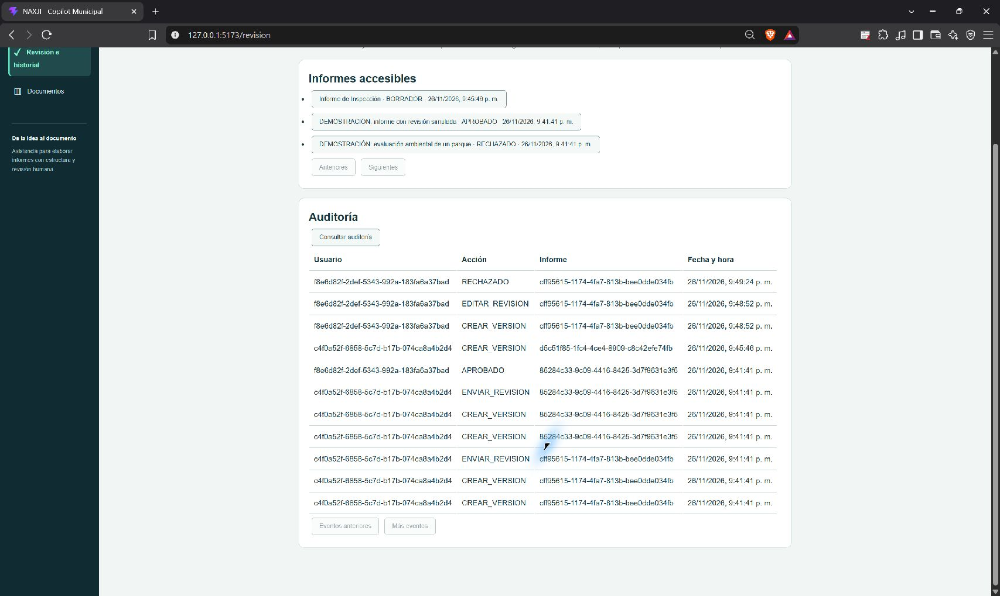

PMV1
HU-001 · Iniciar sesión
Pantalla de acceso con identidad de demostración.

PMV1/PMV1-HU-001-iniciar-sesion.jpg · 1707 × 1019 pxHU-002 · Seleccionar plantilla y registrar datos
Plantilla de inspección, estructura de salida, área y datos obligatorios.

PMV1/PMV1-HU-002-seleccionar-plantilla-y-datos.jpg · 1707 × 1019 pxHU-IA-01 · Generar borrador asistido
Versión guardada con encabezado y contenido producido por el generador de demostración.

PMV1/PMV1-HU-IA-01-generar-borrador.jpg · 1707 × 1019 pxPMV2
HU-003 · Cargar y procesar documentos
Formulario documental y fuente ficticia INDEXADA con un fragmento. La fuente inicial se preparó mediante los casos de uso del backend.

PMV2/PMV2-HU-003-cargar-y-procesar-documento.jpg · 1707 × 1019 pxHU-IA-02 · Recuperar fuentes autorizadas
Fuente recuperada, localización, similitud y texto del fragmento. La similitud procede de embeddings de prueba, no mide calidad semántica real.

PMV2/PMV2-HU-IA-02-recuperar-fuentes.jpg · 1707 × 1019 pxHU-IA-03 · Mostrar citas y procedencia
Referencia del fragmento, procedencia, pasaje vinculado y descarga del original autorizado.

PMV2/PMV2-HU-IA-03-citas-y-procedencia.jpg · 1707 × 1019 pxPMV3
HU-IA-04 · Señalar contenido sin respaldo suficiente
Advertencias por sección: fuente por contrastar, ausencia de cita y contenido pendiente.

PMV3/PMV3-HU-IA-04-advertencias-sin-respaldo.jpg · 1707 × 1019 pxHU-004 · Editar, aprobar o rechazar borrador
Nueva versión editada por el revisor, justificaciones y opciones de decisión. La captura es anterior al rechazo simulado que después se ve en auditoría.

PMV3/PMV3-HU-004-editar-aprobar-o-rechazar.jpg · 1707 × 1019 pxHU-005 · Consultar versiones y exportar informe
Registro de versiones y decisión simulada, con botones de descarga DOCX/PDF aprobados. La imagen muestra los controles; no acredita por sí sola una descarga.

PMV3/PMV3-HU-005-historial-y-exportacion.jpg · 1707 × 1019 pxHU-006 · Consultar auditoría
Tabla administrativa con usuario, acción, informe, fecha y hora; incluye edición y rechazo realizados durante la sesión.

PMV3/PMV3-HU-006-consultar-auditoria.jpg · 1707 × 1019 px